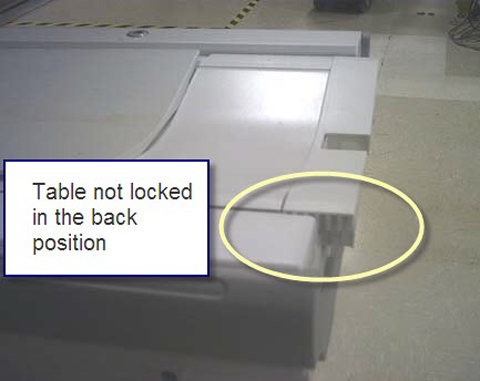
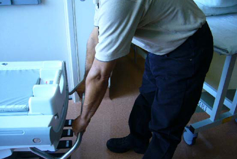
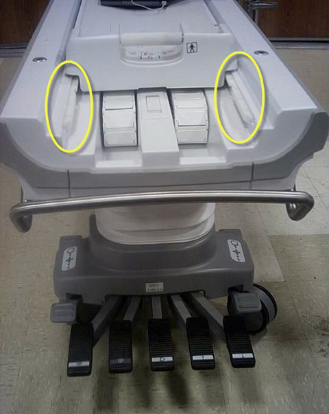
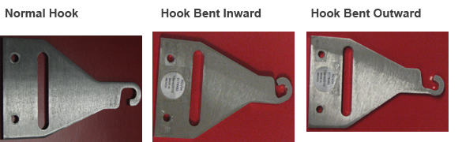
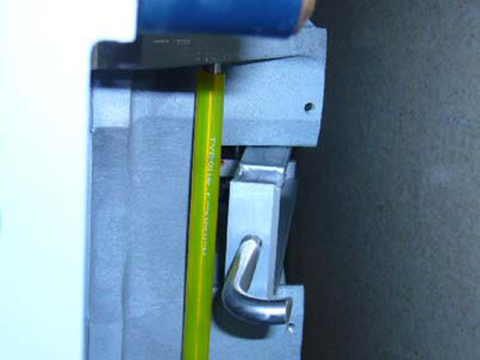
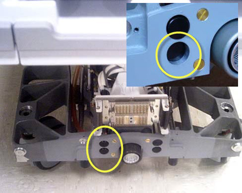
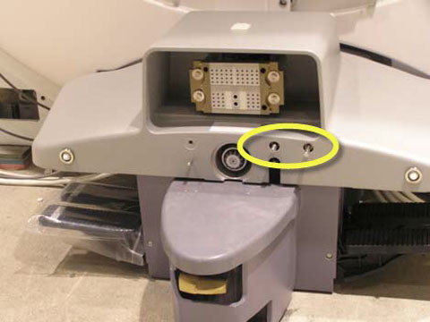

Proprietary to General Electric
Direction 5500113, Rev# 3
Discovery MR450 1.5T Service Methods
Module Version 2.0, Version Date 7/22/10
Proprietary to General Electric |
This document describes various conditions for patient handling subsystems and possible solutions to those conditions. It contains the following sections:
Section 2.1.1 Tabletop will not lock in the back position
Section 2.1.2 Handle too low for the technician to use
Section 2.2 Cradle moves back farther than designed
Section 3.1 Cannot release the caster lock
Section 3.2 Table dock hook is not retracting upwards when the table is undocked
Section 3.3.1 The table goes all the way down with one push
Section 3.3.2 Up and down mechanisms bind when docked
Section 4.1 The LPCA does not sense that table is lower and does not move to start position
Section 4.2 LPCA LEDs not working
Section 4.3 When driving into the bore, the IRD indicates no home
Section 4.4 Clutch Slips
Section 4.5 The carriage hook will not detach from the cradle when the table is undocked
Section 4.6 Cradle position is lost after pressing advance to scan
Section 5.1 Rotary pump fails to drive table up
Section 5.2 Unable to align the dock
Section 6 Troubleshooting the Magnet Keypad and In Room Display
Section 7 Troubleshooting the PAC
Section 8 Troubleshooting the PHPS
Section 9 Troubleshooting the Intercom
Section 10 Troubleshooting the Bridge
Table will not lock in the back position all the way.
Table is locked into position and will not lower or undock, forcing the technician to use the emergency release to undock.
Illustration 1: Table Not Locked

Cause
Worn edge on the locking mechanism, as shown in the illustration below.
Illustration 2: Worn Edge

The locking mechanism was not designed for the table to be moved by the emergency handle. This could eventually damage the latching system.
Solution
Replace the worn components and instruct users not to use the emergency handle to move the table. See Cradle Guide Rail Replacement.
Cause
Technicians are using the emergency release to push the table especially when the table is in the lower position. This causes the rail guides to become misaligned and the table will not lock in position as discussed above.
Illustration 3: Emergency Release as Handle

Solution
Operator should be using the handle as shown.
Illustration 4: Proper Use of Handle

Illustration 5: Cradle Too Far Back

Cause
Guide strips are not pushed down far enough or are misaligned.
Illustration 6: Misaligned Rails

Solution
Replace defective components as needed. Adjust the guide rails according to the “Cradle Guide Rail Replacement” procedure. See Cradle Guide Rail Replacement.
The wheel will be locked in the forward position and will not release.
Cause
The hook bends forward.
Illustration 7: Hook Locations

Illustration 8: Normal Hook and Bent Hooks

Solution
If the hook is bent, replace it. See Braking System Replacements.
Tables will not undock – emergency release has to be asserted.
Causes
Misadjustment of internal mechanism.
Obstructions not allowing electrical dock connector to come all the way back (32 channel only).
Illustration 9: Dock Connector

Solutions
Remove the front cowling on the patient table to expose the 32-channel connector in the table.
Verify that cables or tie-wraps are not obstructing the rearward travel of the connector sled. When the table is undocked, the sled must travel to the full rear position. Redress any obstructing cables.
Verify that the zipper from the bellows or the cables are not getting caught behind the plastic slide, or on the links or covers.
Check the cradle release adjustment mechanism in the lower table frame and make sure the adjustment line exits parallel to the block stem. Too much tension can cause binding of the hook.
Check the adjustment line and make sure it is not too tight. It should exit the block adjustment stem as shown in the illustration below. If the line is exiting the block adjustment stem at a sharper angle, the dock hook may not retract properly. Readjust the stem and nut so that the line of travel looks more like the one illustrated below.
Illustration 10: Cradle Release Adjustment Mechanism

Table will not rise. The actuator on the front of the table is stuck as shown in the picture.
Illustration 11: Stuck Actuator

Cause
Hydraulic line presses against the control rod causes the button to jam in the down position.
Illustration 12: Line Against Control Rod

Solution
Attempt to move the hydraulic line out of the way of the control rod. This should have been corrected with installation of FMI 60769.
Table continues to go down after the pedal is released. Cannot move up when docked.
Up and down mechanisms that penetrate front casting inside the table works fine when table is undocked but seem to bind after the table is docked.
OR
The patient table elevates slowly from the dock motor or will not elevate from the dock motor, but it works correctly when manually elevated using the patient table pedal.
Causes
Problems with the motor assembly.
Misalignment of the table.
Solution
Confirm that when viewing the dock motor from the front of the dock that the motor rotates in a clockwise direction. If it does not, swap the motor leads inside the dock to reverse the rotation and submit an iTrak against this issue.
| NOTE: | Misalignment may cause table pump to malfunction during operation and not properly pressurize fluid. |
Technician raises table and does not realize that LPCA is out of position.
Illustration 13: LPCA Out of Position

Causes
The home switch in the front is not operating correctly.
The dock hook tension is not set correctly.
The cradle latch is not disengaging correctly.
The table is not properly aligned.
There is a home flag error.
Pressing the two actuators, illustrated below, will cause the LPCA to move to the home position to connect to the cradle if the longitudinal drive is operating correctly.
Illustration 14: Two Actuators

Solution
Check to make sure that the dock hook tension is set properly. If the setting is too loose, this could contribute to this problem. If no other motion issues exist, then check if the table up limit is coming out far enough.
When the tables goes up and down you should be able to hear the switch in the dock click when it is actuated. If the up limit cable isn’t tensioned properly then it may not be lifting the bell crank up high enough.
Check cable for proper operation.
Check table alignment to the dock.
Cause
The polarity of the LED is wrong.
Solution
Open the LPCA and confirm the polarity of the LED. Reposition the LED in its receptacle if incorrect.
When driving the table in, the position display changes from about 2380 to no home. Or, when driving into the bore, the IRD indicated no home.
| NOTE: | This problem happens even though the cradle is approximately 12 inches from the end of travel. To reset it, you must drive it to home. |
Cause
The scan room size selection in the Guided Install was set to short. (Does not apply to MR450W.)
Solution
Confirm that the plastic end-of-travel (EOT) ramp is affixed to the proper location on the bridge. See the System Installation manual for this procedure. The ramp is affixed at the end of the bridge for a long room configuration, and at ¾ from the end of the bridge for a short room configuration.
From the GOC, select Guided Install > Hardware, and then set the Scan Range (micro-meter) selection to the appropriate setting.
System reports an error that indicates the clutch slip was greater than expected or the carriage sometimes slips and will not drive all the way to the home position.
Causes
Obstacles in the longitudinal direction
A misadjusted belt or clutch.
Solutions
| NOTE: | The clutch is not adjustable in the field. |
Verify that the system is aligned correctly.
Make sure the belt is tensioned properly. See Bridge and Longitudinal Drive Belt Replacement.
Check the drive pulley on the front of the bridge and make sure it rotates freely.
Sometimes the carriage stops within ¼ inch (6.4 mm) of the end-of-travel (the home position). Customers who use the HOME button to drive the cradle home instead of the OUT FAST button see this issue more often. When the HOME button is pressed, the system slows carriage travel during its last 20 cm. This means there is less inertia to help move the carriage through the last ¼ inch of travel.
Drive belt tension can affect long drive force from five to seven pounds. Making sure the belt is tensioned properly will help correct drive problems. If you measure carriage drive force using the field force gauge you should see force measurement midway between the two upper and lower scribe lines.
Confirm LPCA has no binding over the distance to the travel.
Causes
Table height is misadjusted.
Hook size is too large or cradle receptor is incorrectly sized.
Front latch lock is not adjusted correctly.
Screw in front of LPCA is misadjusted.
Solutions
Check patient table alignment, leveling, adjustment of front carriage plunger and egress switch position. See tabletop height adjustment.
Verify that the hook fits easily into the receptor. If not, check for a burr on the part and replace if necessary.
Perform the Cradle Release Pin Height Adjustment.
Screw in the Actuator on the front of the LPCA one clockwise revolution. Make sure the adjuster still pushes the button on the front of the cradle enough to release the cradle side latch. The adjuster should push only the button, and it should not push the button to the point that it pushes against the front of the cradle. This adjustment will take the uneven force off of the cradle and LPCA and center the push on the cradle latch.
Illustration 15: Cradle Components

Error 2268822 is being logged - After landmarking and pressing Advance to Scan, the cradle position is lost on the enclosure display. Error log displays Error 2268822.
Cradle didn't start moving when requested.
Home switch may not be functioning.
Last stop position: -2445843 um
Current position: -2445843 um->
Cause
Brass home plunger stuck in the up position.
Solution
Examine the brass home plunger located in front of the LCPA, and make sure it is free of residue and is able to move freely through the plastic hole in the LCPA.
Check the plastic hole for debris.
If the brass home plunger has residue on it, remove the plunger, clean it with rubbing alcohol, and polish it. Clean the plastic hole in the LCPA with rubbing alcohol.
Grinding when using the motor to raise or lower the table. Or, rotary pump fails to drive table up.
Cause
Alignment of the table height via the casters is not correct. The bosses must be aligned.
Illustration 16: Bosses Aligned

Solutions
Table needs to be aligned to dock. Adjust casters until bosses are aligned. See Dock Adjustments and check dock hook for proper tension. Also, refer to Patient Handling Alignment Service Note (DOC0758504).
Causes
Bridge not centered.
Dock floor bolt not properly installed.
Front bridge lower support bracket not properly aligned.
Solution
Check table alignment per the installation manual and realign accordingly.
The in Room Display (IRD) is dark or trackball and buttons are not responding
Causes
IRD electronics are hung.
Cables not detected or misconfigured.
Power supply failure.
System requires a reset.
Solution
| NOTE: | Always boot applications as sdc from the login window. Using other logins may result in the IRD software not loading. |
If this is occurs after the initial software load, make sure the IRD software is installed from Guided Install.
Go to CSD Diags and run the In Room Diagnostics. See In Room Display Diagnostics.
Illustration 17: In Room Display

Confirm the state of the software (installed/uninstalled).
Make sure both track ball assemblies are detected.
| NOTE: | IRD video will not function if track ball assemblies are not detected. |
If a track ball assembly is not detected, click Reset IRD, check to see if the track ball assemblies are detected and operational.
If a track ball assembly is not detected, check the cabling to the track ball assembly.
If the problem persists, attempt to reboot the Host PC.
If the IRD is still dark, use a flashlight to check the IRD display and confirm that the IRD backlight has not failed.
Check the Link Status LED located on the IRM module inside the GOC.
A green LED means the IRD is communicating and the trackball assemblies have been detected.
A red LED means the trackball assemblies have not been detected or that the IRD is not communicating.
Illustration 18: IRD Connections

If the Link Status light is red and all of the cabling is properly connected between the IRM module and the IRD, make sure the TX and RX fiber optic cables from the IRM are not swapped. (It is possible to swap these cables in the field.) Some of the early cables were built wrong.
If the USB Status light is not green, the USB signal on the fiber optic lines is not correct. Check the USB connections from the trackball assemblies to the IRD and From the GOC console, select Diagnostics > Hardware > Magnet Room > Reset IRD Console.
PAC not communicating
Cause
This failure indicates a failure with the PAC or a communications failure with one or more of the following devices PAC->CFB->STIF->SPU.
Solution
Check the fiber optic connections at the PAC.
Check for power to the PAC.
Run diagnostics:
PAC Diagnostics Test
PAC Manual Tests
CFB Functional Diagnostics
FB Board Level Diagnostics
| NOTE: | These test runs from the PAC to the CFB, and the CFB repeats the communications to the STIF. While the PAC and STIF are not CAN devices, the CFB handles communications for them. Both of the fiber optic cable runs from the CFB to the PAC and from the CFB to the STIF must be attached and functioning for the PAC to communicate. |
System reports Error 2274509 (magnet power from the PHPS)
CFB detected that the magnet power from the PHPS is low.
Causes
There is a known issue with how the CFB is monitoring this power.
Bad cable connection to PHPS or bad PHPS.
Solution
Unless this message is accompanied by other error messages (at the same time) that refer to failures of the SRI, the PAC, the 1- Wire, the In Room Display (IRD), or the CAN Fiber-Optic Board (CFB), please disregard this error as a nuisance error.
No audio from the patient intercom.
Cause
Cable or component failure.
Solutions
Check connections to the GOCAA module inside the GOC. See the System Block Diagrams, Operator Workspace.
Disconnect J34 (speaker) at SRI4 and see if audio at console starts working.
Disconnect J31 (rear mic) at SRI4 and see if audio at console starts working.
Disconnect J32 (front mic) at SRI4 and see if audio at console starts working.
Check connections at GOCAA J7, SPW J118, magnet IO panel J1, and SRI4 J33.
Table will not align with bridge.
Cause
Magnet or front bracket was not installed correctly.
Solution
Check the position of the brackets mounted to the front of magnet. These brackets should be properly centered to permit correct alignment. Refer to the system installation manual.